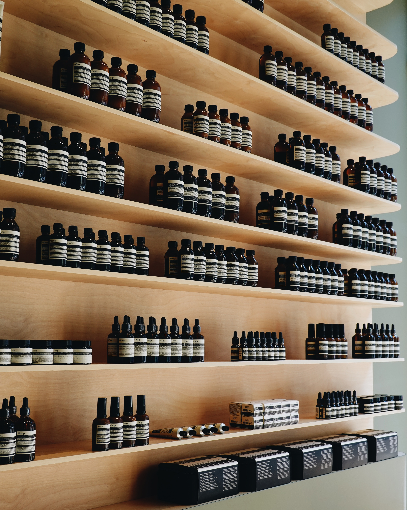

이솝은 1987년에 설립되었고 멜버른에 본사를 두고 있으며 세계 다수 지역에 사무실과 스토어를 보유하고 있습니다.
이솝은 2004년 멜버른 교외의 세인트 킬다 작은 지하 코너에서 최초의 고객을 맞이했습니다. 이곳은 지하 주차장으로 이어지는 좁은 비탈길에 위치한 작은 스토어였지만, 현재는 이솝 건축과 디자인의 기준점이 되었습니다. 이솝은 새로운 매장 오픈을 준비할 때 이미 그 장소에 있는 것을 어떻게 활용하고 협력할지를 가장 먼저 염두에 둡니다. 또한 과거, 현재, 미래에 대한 고민을 함께 하며 조심스럽게 스토어 오픈을 계획합니다.
